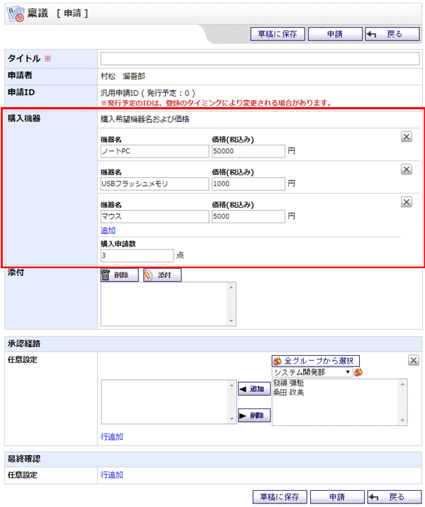

申請内容要素に表を使用した場合の一例です。下図赤枠内が実際に使用した申請内容になります。
今回は「購入機器」というタイトルの表を作成し、ヘッダー・ボディ・フッターにはそれぞれ以下の申請内容を配置しました。
| ヘッダー | ：コメント |
| ボディ | ：テキスト入力(機器名)、数値入力(価格) |
| フッター | ：数値入力(購入申請数) |

※ボディ内に申請内容を追加した時、フォームIDが設定されている場合は追加後の申請内容にも同じものが設定されます。経路利用条件として入力情報を指定している場合は、同じフォームIDを持つ申請内容の値を合計した数値が対象となりますので、ご注意ください。